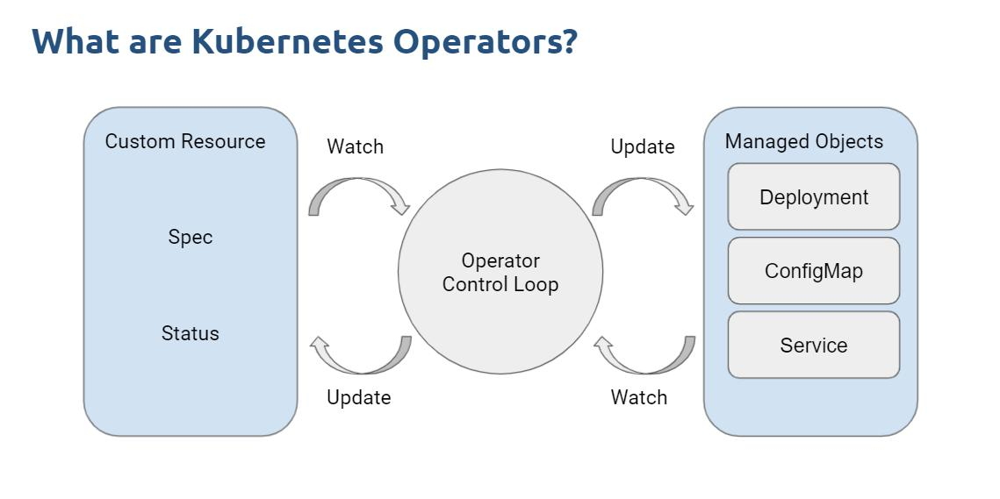

Operator 入门与实战
Operator 概述
什么是 Operator
Operator 是一种特殊的控制器（Controller），他能够把控制循环机制应用到自定义资源（CRD）的状态管理中。 Operator = Controller + CRD

期望状态 VS 实际状态
- Spec 字段：期望状态
- Status 字段：实际状态
- Controller：借助控制循环，让期望状态和实际状态保持一致（仅用于 K8s 原生资源：Deployment、Statefulset 等）
CRD
- 自定义资源，借助CustomResourceDefinition 来描述
- 声明式扩展方式
- 例如：定义一个定时伸缩 HPA CRD 资源（CronHPA）
Operator 开发模式的好处
- 复用 Controller 的控制循环，无需自己编码实现
- 复用 K8s 声明式的资源管理能力
- 和 K8s API 原生集成，并能够使用 kubectl 对资源进行增删改查
- 简化了有状态应用的开发和管理流程
- 能够继承 K8s 的应用管理能力（自愈、滚动更新、自动重启等）
Operator 的使用场景
自定义资源，例如定义数据库实例、云资源等 自动化运维任务，如备份数据库 CI/CD Workflow 存储系统管理：Rook、Ceph 等
Kubebuilder VS Operator SDK
- Kubebuilder：K8s 官方提供的 Operator 开发框架，底层使用了 controller-runtime 和 controller-tools
- Operator SDK：底层使用了 Kubebuilder，但提供了额外的一些能力
- Operator Lifecycle Manager：很容易打包和分发 Operator
- OperatorHub：Operator 发布中心，类似 Docker Hub
- Operator SDK scorecard：小工具，确保 Operator 开发过程的最佳实践
- 除了使用 Golang 开发，还支持从 Ansible 和 Helm 创建 Operator
Kubebuilder 架构
- Manager：初始化 Controller
- Controller：具备 Cache、队列和失败重试能力
- Reconciler：只需实现这部分业务逻辑
- Client：不直接使用
- Cache：不直接使用
- Webhook：编写 AdmissionWebHook 使用
Reconcile 架构
- 触发 Reconcile 的过程实际上是从工作队列取获取元素的过程
- 根据 Reconcile 的业务逻辑执行结果，分几种情况
- 执行成功，无需重试
- 执行错误，需要重试
- 执行成功，因其他原因需要重试
- 其他原因需要等待一段时间后重试
Reconcile 重试
- 成功，无需重试：return ctrl.Result{}, nil
- 失败，需要重试：return ctrl.Result{}, err
- 成功，其他原因需要重试：return ctrl.Result{Requeue: true}, nil
- 其他原因需要等待一段时间后重试：return ctrl.Result{RequeueAfter: 5 * time.Second}, nil
Controller 架构
- ProcessNextWorkImen()：从工作队列里获取下一个元素
- ReconcileHandler()：调用 Reconcile 方法，并根据返回结果控制元素从队列里删除（业务执行成功），或者重新入队（业务执行失败）
Controller 核心源码
使用 RateLimit Queue 来实现工作队列，类似于之前我们在 Client-go 里实现工作队列
Kubebuilder 实战一：实现类似 KubeVela Application 定义
本地创建集群
- 使用 Kind 创建本地集群
- https://kind.sigs.k8s.io/docs/user/quick-start/
- kind create cluster
- 安装 kubebuilder：https://book.kubebuilder.io/quick-start#installation
CRD 设计
实现使用一个 CRD 生成 Deployment、Service、Ingress 对象
Group: application.aiops.com
Version: v1
Kind: Application
步骤
mkdir application && cd application
go mod init github.com/lyzhang1999/application
kubebuilder init --domain=aiops.com
kubebuilder create api --group application --version v1 --kind Application
完善 cronhpa/api/v1/application_types.go
修改 ApplicationSpec
生成 CRD：make manifests，查看 config/crd/bases/application.aiops.com_applications.yaml 文件
编写 internal/controller/application_controller.go Reconcile 业务逻辑
将 CRD 安装到集群：make install
运行 Operator：make run
部署示例：kubectl apply -f config/samples/application_v1_application.yaml
效果
创建 Application 对象，自动创建 Deployment、Service、Ingress 对象 删除 Application 对象，自动删除 Deployment、Service、Ingress 对象 这是通过设置 OwnerReference 自动实现的，Reconcile 内并没有写删除资源逻辑
Kubebuilder Project Layout
/cmd：Operator 主程序入口，当执行 kubebuilder init 时生成
/api：API 资源定义，用户需要修改 *_types.go 文件来实现自定义 CRD，其他文件为自动生成。当执行 kubebuilder create api 时生成
/internal/controller：控制器，用户需要修改 *_controller.go 文件来实现自定义 Reconcile 逻辑，当执行 kubebuilder create api 时生成
/config：CRD 相关对象，自动生成
/config/crd
/config/rbac
/config/sample
Makefile：自动生成，包含了构建、测试、运行和部署控制器
Kubebuilder 实战二：实现阿里云定时弹性伸缩器
CRD 设计
实现定时伸缩 Group: autoscaling.aiops.com Version: v1 Kind: CronHPA
步骤
mkdir cronhpa && cd cronhpa
go mod init github.com/lyzhang1999/cronhpa
kubebuilder init --domain=aiops.com
kubebuilder create api --group autoscaling --version v1 --kind CronHPA
完善 module_8/cronhpa/api/v1/cronhpa_types.go
增加结构体
CronHPA Struct 增加 printcolumn 注释
生成 CRD：make manifests，查看 config/crd/bases/autoscaling.aiops.com_cronhpas.yaml 文件
编写 internal/controller/cronhpa_controller.go Reconcile 业务逻辑
将 CRD 安装到集群：make install
运行 Operator：make run
部署示例：kubectl apply -f config/samples/autoscaling_v1_cronhpa.yaml
如何打包和部署 Operator
设置环境变量：export IMG=lyzhang1999/cronhpa-operator:v0.0.1 构建和推送：make docker-build docker-push 生成 Operator Deploy 文件：make build-installer 使用 dist/install.yaml 即可在任何的 K8s 集群安装
Operator SDK 实战一：基于 Helm 开发 Operator
安装 Operator SDK CLI
https://sdk.operatorframework.io/docs/installation/
CRD 设计
引用 Helm Chart values.yaml 的内容作为 CRD Spec 配置内容 CRD 出现变化时，自动处理变更（使用新的安装参数重新安装）
步骤
mkdir redis-operator && cd redis-operator
go mod init github.com/lyzhang1999/redis-operator
operator-sdk init --domain aiops.com --plugins helm
operator-sdk create api --group app --version v1 --kind Redis --helm-chart-repo
https://charts.bitnami.com/bitnami --helm-chart redis
报错，更新 helm 依赖：cd helm-charts/redis && helm dependencies build
返回根目录，重新创建 operator-sdk create api --group app --version v1 --kind Redis --helm-chart ./helmcharts/redis
构建并推送镜像：make docker-build docker-push IMG="lyzhang1999/redis-operator:v0.0.1"
部署 Operator：make deploy IMG="lyzhang1999/redis-operator:v0.0.1"
部署 CRD：kubectl apply -f config/samples/app_v1_redis.yaml
报错，解决 Service account 权限问题：kubectl create clusterrolebinding redis-operator-cluster-admin \
--serviceaccount=redis-operator-system:redis-operator-controller-manager \
--clusterrole=cluster-admin
删除 Operator Pod，重新拉起后可见 Redis
Operator SDK OLM
Operator Lifecycle Manager (OLM)
OLM 是用于管理 Operator 生命周期的工具 可以实现将 Operator 整体打包，并生成软件部署清单（bundles） 很容易安装、卸载、升级 Operator 安装：operator-sdk olm install
OLM 使用
- 设置环境变量
- export IMG=docker.io/lyzhang1999/redis-operator:v0.0.1 // 存储镜像的位置
- export BUNDLE_IMG=docker.io/lyzhang1999/redis-operator-bundle:v0.0.1 // 存储软件包的位置
- 创建软件包：make bundle
- 多平台构建可以用 docker buildx build --push --platform linux/amd64 --tag $IMG .
- 推送软件包：make bundle-build bundle-push
- 验证软件包：operator-sdk bundle validate $BUNDLE_IMG
- 安装 Operator（软件包的方式）：operator-sdk run bundle $BUNDLE_IMG
最佳实践
- Reconcile 不应该关注具体事件（创建、更新、删除），更不应该针对不同事件使用不同逻辑
- 设计一个幂等的 Reconcile 是第一要素（事件无关）
- 幂等的 Reconcile
- 无论运行多少次，结果都是一样的，因为事件可能会被重复触发
- 简化 Reconcile 逻辑
- 只关注期望状态和当前状态 Diff，执行业务逻辑
如何对 Operator 进行端到端测试(E2E)？
- 借助 envtest.Environment Mock 一个 K8s API Server
- 安装 setup-event 配置 envtest：go install sigs.k8s.io/controller-runtime/tools/setup-envtest@latest
- 运行：setup-envtest use 1.28
- 将输出 envtest 二进制文件的目录，例如
- /Users/wangwei/Library/Application Support/io.kubebuilder.envtest/k8s/1.28.3-darwin-arm64
- 将输出 envtest 二进制文件的目录，例如
- 创建软连接
- sudo mkdir /usr/local/kubebuilder
- sudo ln -s /path/to/kubebuilder-envtest/k8s/1.23.5-linux-amd64 /usr/local/kubebuilder/bin
- 编写 E2E 测试文件：module_8/application/test/e2e/cluster.go
- 启动测试：make test-e2e
测试结果
注意：envtest K8s 环境没有真实的控制器，不会有真实的工作负载 仅用来测试 Operator CRD 的创建、Status 更新等逻辑
实战一：开发 Operator 1 调度 GPU 竞价实例资源池
竞价实例价格优势
| GN7.2XLARGE32 | 按量计费 | 竞价实例（参考 |
|---|---|---|
| 8C32G, GPU T4-16G | 8.68/H | 1.736/H |
| 系统盘（50G 云盘） | 0.02 | 0.02 |
| 宽带（1Mbps 按宽带计费） | 0.06 | 0.06 |
| 收费合计 | 8.76 | 1.816（8 倍） |
GPU 竞价实例
https://cloud.tencent.com/document/product/213/17816
维持 GPU 资源池
本地创建集群
- 使用 Kind 创建本地集群
- https://kind.sigs.k8s.io/docs/user/quick-start/
- kind create cluster
- 安装 kubebuilder：https://book.kubebuilder.io/quick-start#installation
CRD 设计
Group: devops.geektime.devopscamp.gk/v1 Version: v1 Kind: SpotPool 通过 minimum 和 maximum 参数来维持资源池GPU 实例数量
技术细节
- 接入腾讯云 SDK 实现创建竞价实例
- https://cloud.tencent.com/document/sdk/Go
- 借助 Operator RequeueAfter 实现定时检查资源池实例数量是否满足预期
步骤
mkdir spotpool && cd spotpool
go mod init github.com/lyzhang1999/spotpool
kubebuilder init --domain=devopscamp.gk
kubebuilder create api --group devops.geektime --version v1 --kind Spotpool
完善 spotpool/api/v1/spotpool_types.go
修改 SpotpoolSpec
生成 CRD：make manifests，查看 config/crd/bases/devops.geektime.devopscamp.gk_spotpools.yaml 文件
编写 internal/controller/spotpool_controller.go Reconcile 业务逻辑
将 CRD 安装到集群：make install
运行 Operator：make run
编辑 sample 并部署：kubectl apply -f config/samples/devops.geektime_v1_spotpool.yaml
实战二：Operator 实现大模型私有部署（Kong API + 多 GPU 负载均衡）
Ollama
- 借助 Ollama 私有部署大模型
- /api/chat 接口兼容 OpenAI 数据结构
- 单实例推理较慢，借助网关实现多 Ollama 实例负载均衡
- 网关选型：Kong、Nginx 等
Ollama 多实例负载均衡部署
新 GPU 实例初始化问题
新实例初始化 下载 Ollama 及其依赖 下载模型 启动 Ollama 服务：ollama serve 使用自定义虚拟机镜像代替启动脚本初始化
Ollama 自启动问题
- Service 方式部署，实现自启动
- 创建 /etc/systemd/system/ollama.service
- 启动服务
- sudo systemctl daemon-reload
- sudo systemctl enable ollama
- 将配置好的虚拟机制作自定义镜像，拉起新的 GPU 实例时指定该镜像 ID 即可
[Unit]
Description=Ollama Service #描述
After=network-online.target #依赖
[Service]
ExecStart=/usr/bin/ollama serve
User=ollama
Group=ollama
Restart=always
RestartSec=3
Environment="PATH=$PATH"
[Install]
WantedBy=default.target
步骤：制作 Ollama 镜像
- IaC 创建虚拟机
- 执行 Shell 脚本安装 Ollama
- 创建 Service，并启动
- 预加载模型
- 关机，制作自定义镜像，得到镜像 ID
步骤：部署 Kong 网关
- IaC 创建虚拟机
- 安装 Docker
- 修改 Kong admin_listen 和 admin_gui_listen 配置，监听在 0.0.0.0 端口
- kong/docker-compose/docker-compose.yaml
- 暴露 API，便于 Operator 控制
- 以 Docker Compose 方式启动 Kong Gateway
构建 Operator 步骤
基于 demo_1 继续完善 CRD 增加 kongGatewayIP，便于 Operator 请求 Kong API 控制动态负载均衡列表 修改 Reconcile，实现 GPU 实例和 Kong 负载均衡同步
效果
当请求 Kong 网关时，流量被转发到多台 GPU 实例进行推理 实现大规模 LLM 私有部署和负载均衡
实战三：开发基于 LLM 的日志流监测 Operator
LogPilot：LLM 日志流检测 Operator
- 从 Loki 获取错误日志
- 将日志发送至大模型并获取建议
- 将严重的问题发送至飞书通知
CRD 设计
- Group: log.aiops.com
- Version: v1
- Kind: LogPilot
- 从指定的 Loki URL 获取日志
- 将日志发送至指定的模型服务商（商业模型或自托管模型）
步骤
mkdir logpilot && cd logpilot
go mod init github.com/lyzhang1999/llm-log-operator
kubebuilder init --domain=aiops.com
kubebuilder create api --group log --version v1 --kind LogPilot
修改：api/v1/logpilot_types.go LogPilotSpec
修改：internal/controller/logpilot_controller.go 增加相关业务逻辑
拉起 Prometheus Stack，获得 Loki IP
修改 config/samples/log_v1_logpilot.yaml 并部署
实战四：利用 RAGflow 实现基于运维专家知识库故障排查 Operator
架构设计
- 直接获取 Pod 日志
- 将日志发送至 RagFlow 基于内部运维专家知识库获取解决方案
- 将消息发送至飞书
CRD 设计
Group: log.aiops.com Version: v1 Kind: RagLogPilot 获取命名空间下所有 Pod 的日志 将日志发送至 RagFlow API 获取解决方案
RagFlow 核心 API
- 创建对话
- GET /api/new_conversation?user_id=xxx
- data.id = conversation_id
- 基于运维知识库获取回复
- POST /api/completion
- conversation_id、messages、stream=false
- 回复：data.answer
步骤
mkdir raglogpilot && cd raglogpilot
go mod init github.com/lyzhang1999/rag-log-operator
kubebuilder init --domain=aiops.com
kubebuilder create api --group log --version v1 --kind RagLogPilot
修改：api/v1/raglogpilot_types.go RagLogPilotSpec
修改：internal/controller/raglogpilot_controller.go 增加相关业务逻辑
拉起 RagFlow 并创建内部运维知识库
修改 config/samples/log_v1_raglogpilot.yaml 并部署